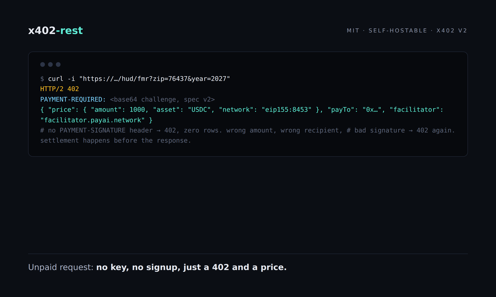

Four paid data APIs, no API keys, no accounts, no subscriptions. A request either carries a payment signature or gets a 402 with instructions on how to pay.

HTTP 402 has said "Payment Required" since the nineties, and the spec kept it reserved while nobody built on it. I found a use for it. Every paid route on my four data APIs charges through a 402 response: the server refuses politely, tells you exactly what to pay and where, and waits. If the next request carries a valid payment signature, you get the data. If it does not, you get another 402 and zero rows.
The numbers first, since posts like this tend to hide them. Four services live on one box:
| Endpoint | Price |
|---|---|
GET /nfl/scores — scores and betting lines, 7,548 games, 1999–2026 | $0.01/call |
GET /hud/fmr?zip=76437 — HUD Fair Market Rent, 51,895 ZIPs | $0.001/call |
GET /airbnb/city/austin — nightly price stats, 90,169 listings across 6 cities | $0.001/call |
GET /query/{slug} — full rows from any cataloged dataset | $0.01/call |
All prices in USDC on Base, settled per request through an x402 facilitator. The NFL data comes from nflverse under CC BY 4.0, the rent data from huduser.gov (US public domain), the Airbnb snapshots from Inside Airbnb. A live demo with real captured responses is at jayjex.github.io/x402-rest, and the source is MIT licensed.
Call a paid route with no payment header:
curl -i "https://<public-base>/hud/fmr?zip=76437"The reply is 402 Payment Required with a JSON body. This is a real captured response (I swapped the ephemeral host for a placeholder, nothing else):
{
"x402Version": 2,
"error": "PAYMENT-SIGNATURE header is required",
"resource": {
"url": "https://<public-base>/hud/fmr",
"description": "HUD Fair Market Rent by ZIP code: FY2026 (51,895 rows, default) and FY2027 (51,871 rows, effective Oct 1 2026) via year=2027. Query: zip=XXXXX required, optional year=2026|2027. Returns FMR for 0-4 bedrooms.",
"mimeType": "application/json",
"serviceName": "Matchbook Sports, Rent & Stay Data",
"tags": ["hud", "rent", "fmr", "housing", "real-estate", "data"]
},
"accepts": [
{
"scheme": "exact",
"network": "eip155:8453",
"amount": "1000",
"asset": "0x833589fCD6eDb6E08f4c7C32D4f71b54bdA02913",
"payTo": "0xaECCEE9470450bEA19b315E3C0a580DBa6930500",
"maxTimeoutSeconds": 60,
"extra": { "name": "USDC", "version": "2" }
}
],
"extensions": {
"bazaar": {
"info": {
"input": { "type": "http", "method": "GET", "queryParams": { "zip": "76437" } },
"output": {
"type": "json",
"example": {
"zip": "76437",
"year": 2026,
"count": 1,
"fmr": [{ "hud_area_code": "METRO10180M10180", "area_name": "Abilene, TX MSA", "state": "TX", "fmr_0br": 850, "fmr_1br": 880, "fmr_2br": 1090, "fmr_3br": 1420, "fmr_4br": 1710 }]
}
}
}
}
}
}Everything a client needs is in there. x402Version says which protocol dialect. resource describes what you are buying. accepts holds the payment terms: the exact scheme on Base (eip155:8453), 1000 in atomic USDC units ($0.001), the asset contract, and my payout address. The bazaar extension makes the API self-describing, so an agent that has never seen this endpoint can read the example output and figure out what a purchase returns before spending anything.
The same challenge travels in a PAYMENT-REQUIRED response header, base64-encoded. Header and body carry identical content, so both thin clients and browsers can parse it.
The client signs an EIP-3009 transferWithAuthorization for exactly the amount in accepts, in USDC on Base, then resends the request with a PAYMENT-SIGNATURE header. That signature scheme lets a USDC contract move tokens on someone's behalf with a single signed message, no prior approval transaction needed.
You can hand-roll this, or use the x402 SDK, which handles the 402-sign-retry loop:
import { x402Client, wrapFetchWithPayment } from "@x402/fetch";
import { ExactEvmScheme } from "@x402/evm/exact/client";
import { privateKeyToAccount } from "viem/accounts";
const client = new x402Client().register("eip155:8453",
new ExactEvmScheme(privateKeyToAccount(process.env.EVM_PRIVATE_KEY!)));
const paid = wrapFetchWithPayment(fetch, client);
const res = await paid("https://<public-base>/nfl/scores?season=2025"); // auto 402 -> sign -> retryOn the server side, the request handler verifies the signature with the facilitator, checks the amount and recipient against the route's price, settles on-chain, and only then returns the data. The data and a PAYMENT-RESPONSE header travel in the same reply, so there is no state where you have paid and are waiting for a second request to deliver the goods.
API keys are an account system wearing a smaller costume. Every keyed API I have run or integrated carried the same tail of work: signup flows, a dashboard, key rotation, revocation, per-tenant rate limits, and eventually emails from people locked out of their own accounts.
The payment header replaces all of it. Authorization is per request: the signature either pays for this exact route at this exact price, or it does not. There is no user table, so there is nothing to rotate or leak. A leaked signature authorizes one transfer of one amount, which is a different threat model from a leaked API key with a monthly invoice attached.
It also changes who can call the API. A script, a cron job, or an agent can start paying without creating an account. The pricing table above is the whole onboarding.
The design rule is simple: no valid payment, no data. The failure paths in the running service:
PAYMENT-SIGNATURE header: 402 with the challenge, zero rows.payTo, bad signature, wrong network): the server checks amount and recipient against the route before settling, then returns 402 with the error and zero rows.X-Origin-Secret instead; a missing or wrong secret gets 401 origin_secret_required, and over 60 requests per minute per IP gets 429.The only data anyone reads for free is what the free routes return: /health, the route catalog with prices, and 10-row previews per dataset. That is deliberate. A buyer can inspect the shape and freshness of the data before spending anything, and I can hand out documentation without handing out the product.
The whole rail is one Node script with zero npm dependencies, Node 22 or newer, and the datasets as CSVs. MIT licensed, at github.com/jayjex/x402-rest. Environment variables set your wallet (PAYTO), network, facilitator, and the public base URL written into 402 challenges.
For development, flip X402_NETWORK=eip155:84532 and the same code settles against Base Sepolia USDC with the public x402.org facilitator, so testing the full 402-sign-settle loop costs nothing.
If you want to see the flow without signing anything, the interactive demo walks through a real 402, the payment header, and the settled response with captured payloads.
The bet behind this setup is small: HTTP 402 waited thirty years for a payment rail cheap enough to charge $0.001 per call without fees eating it. Stablecoins on an L2 got it there.